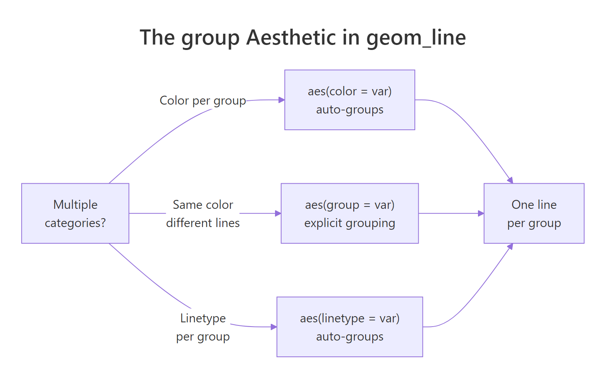
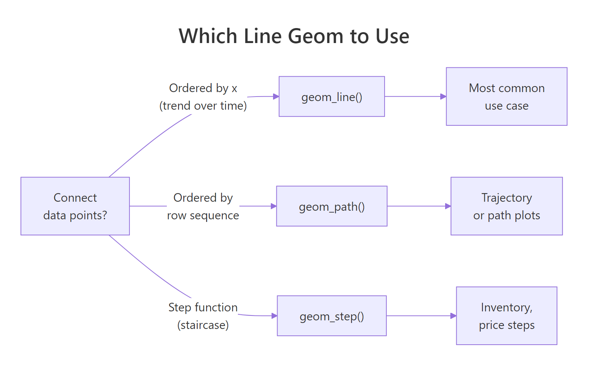

ggplot2 Line Charts: Connect Points, Group by Variable, and Style Lines
A line chart connects observations in sequence to show change over an ordered variable — most often time. In ggplot2, geom_line() draws the connecting lines, while the group aesthetic controls how many lines appear when your data has multiple categories.
Introduction
Line charts are the natural choice when change over time matters more than individual values. If you want to show how unemployment evolved over 40 years, how three tree species grew month by month, or how a stock price moved across a trading day, a line chart tells that story at a glance.
The ggplot2 implementation is clean: geom_line() connects your data points in order of the x variable. But there is one subtlety that trips up nearly every new ggplot2 user — the group aesthetic. Without it, a dataset with multiple categories produces a zigzag mess instead of separate smooth lines. Once you understand that, everything else falls into place.
In this tutorial, you will learn how to:
- Build a basic line chart with
geom_line() - Add point markers with
geom_point() - Draw multiple lines using the
groupandcoloraesthetics - Style lines with color, linetype, and linewidth
- Plot dates on the x-axis for time series data
- Choose between
geom_line(),geom_step(), andgeom_path()
All code blocks share a single WebR session — variables from earlier blocks are available in later ones.
How does geom_line() connect data points?
geom_line() connects observations sorted by the x-axis variable. That "sorted by x" part is critical: if you have data at x = 1, 5, 2, ggplot2 draws the line through 1 → 2 → 5 in x order, not in row order. This is almost always what you want for time series.
Let's start with R's built-in economics dataset, which tracks US economic indicators monthly from 1967 to 2015. We'll use a recent subset to keep the chart readable.
Now draw the simplest possible line chart — unemployment count over time:
KEY INSIGHT: In ggplot2 versions 3.4+, the parameter to control line thickness is
linewidth, notsize. Old tutorials usingsizeinsidegeom_line()will still work (with a deprecation warning) butlinewidthis the correct modern form.sizestill controls point size ingeom_point().
Try it: Change unemploy to uempmed (median weeks unemployed). Does that variable show a different pattern from the raw count?
Click to reveal solution
uempmed is the median duration of unemployment, not the total count, so the line spikes much higher during the 2008-2010 recession and decays slowly afterwards — duration stays elevated even once the count starts falling. Only the y aesthetic needs to change; the rest of the chart is identical.
How do you add point markers to a line chart?
Adding geom_point() on top of geom_line() marks each individual observation clearly — useful when your data is sparse or you want to emphasize every data point:
shape = 21 gives a filled circle with a separate border. Setting fill = "white" and stroke = 1.2 creates the clean "open circle with colored rim" look — easy to see against both light and dark backgrounds.
TIP: For dense time series (monthly data over 20+ years), skip the point markers — they clutter the line. Use points only when you have fewer than ~50 observations per line.
Try it: Replace shape = 21, fill = "white" with shape = 16 (solid filled circle). Which looks cleaner at this data density?
Click to reveal solution
shape = 16 is a solid, filled-through circle that doesn't need fill or stroke, so the call gets shorter. At this density (about 60 monthly points) both forms look fine — solid circles feel more compact, while the open rim from shape 21 pops more against a dark line when you want each point to really stand out.
How do you draw multiple lines by group?
This is the most common stumbling block with geom_line(). Suppose your data has one column for the x variable, one for y, and one identifying which group each row belongs to. Without telling ggplot2 about the grouping, it tries to draw one single line through all rows — and since it jumps between groups, you get the dreaded zigzag.

Figure 2: How the group aesthetic controls one-line-per-category behavior.
The Orange dataset tracks circumference of 5 orange trees over time. Each tree has multiple measurements. Let's use it:
Now fix it by mapping Tree to both group and color:
Now each tree gets its own line and color, with a legend generated automatically.
KEY INSIGHT: When you map a variable to
colorinaes(), ggplot2 automatically groups by that variable — sogroup = Treeis technically redundant here. You need the explicitgroupaesthetic only when you want multiple lines with the same color. For example,geom_line(aes(group = Tree), color = "grey50")draws all 5 trees in grey without a legend.
Try it: Remove color = Tree from aes() and instead set color = "grey50" directly in geom_line(). How does the chart look without per-tree colors?
Click to reveal solution
color = "grey50" lives outside aes(), so it applies to every line as a fixed setting — no legend, no colour mapping. You still need group = Tree inside aes() because without a grouping variable ggplot2 would fall back to one zigzag line across all trees. This style is useful as a background layer to highlight one or two trees on top in a brighter colour.
How do you style lines with color, linetype, and linewidth?
Line styling gives a chart personality — and it's essential for accessibility when color alone can't distinguish groups (e.g., in print or for colorblind readers).
Linetype reference:
| Code | Name | Use when |
|---|---|---|
"solid" |
—— | Primary series, most important line |
"dashed" |
- - - | Secondary comparison line |
"dotted" |
···· | Reference or baseline |
"dotdash" |
-·-· | Fourth category |
"longdash" |
—— - | Fifth category |
"twodash" |
==- | Rarely needed; use sparingly |
TIP: Map
linetypealongsidecolorfor the same grouping variable. This "dual encoding" means readers can distinguish lines both by color and by line pattern — essential for print, photocopies, and colorblind readers. A chart that only uses color will fail for ~8% of male readers.
Try it: Remove scale_linetype_manual() and instead use ggplot2's default linetype scale. Does it still pick a sensible linetype for each tree?
Click to reveal solution
When you map linetype = Tree without a manual scale, ggplot2 picks from its default discrete linetype palette (solid, dashed, dotted, dotdash, longdash) and merges it with the colour legend into one combined key. Note that scale_linetype_brewer() doesn't exist — ColorBrewer is colour-only — so the default scale is the right choice when you're happy with the automatic linetype order.
How do you plot dates and time series on the x-axis?
When your x variable is a Date or POSIXct object, ggplot2 treats it as continuous time and positions points correctly. The scale_x_date() function gives you precise control over the axis breaks and labels.
geom_area() adds the shaded fill below the line — a useful visual trick that emphasizes cumulative volume or magnitude. date_breaks = "3 years" and date_labels = "%Y" control the tick spacing and format.
date_labels format codes:
| Code | Output | Example |
|---|---|---|
"%Y" |
4-digit year | 2010 |
"%b %Y" |
Abbreviated month + year | Jan 2010 |
"%m/%Y" |
Month/Year | 01/2010 |
"%b" |
Abbreviated month only | Jan |
"%d %b" |
Day + month | 15 Jan |
WARNING: If your date column is stored as a character string instead of a
Date,geom_line()will either fail or produce a strange categorical x-axis. Always convert:df$date <- as.Date(df$date_col, format = "%Y-%m-%d")before plotting.
Try it: Change date_breaks to "2 years" and date_labels to "%b %Y". How does the axis labeling change?
Click to reveal solution
date_breaks = "2 years" puts a tick every two years instead of every three, so you get roughly 11 ticks across the 20-year window. date_labels = "%b %Y" formats each tick as "Jan 1995", "Jan 1997", etc., which is more precise than the bare year but also wider — on a narrow plot the labels may start to overlap and you'd need theme(axis.text.x = element_text(angle = 45, hjust = 1)) to tilt them.
When should you use geom_step() or geom_path() instead?
Most line charts use geom_line() — but ggplot2 offers two close relatives for specific situations.

Figure 1: Decision guide: geom_line(), geom_path(), or geom_step().
geom_step() creates a staircase line — horizontal then vertical segments — instead of diagonal connections. Use it when the value is truly constant between observations (step functions): pricing tiers, stock bid/ask updates, inventory levels.
**geom_path()* connects points in row order* instead of x-sorted order. It's used for trajectory plots where the sequence of observations matters but isn't tied to a sorted x-axis — for example, a scatterplot of longitude vs latitude traced over time.
TIP: For 99% of time series charts,
geom_line()is correct. Reach forgeom_step()only when your value is a step function (holds constant until it jumps). Usegeom_path()only for trajectory plots where row order is meaningful.
Try it: Replace geom_step() with geom_path() in the code above. Do you get the same staircase appearance, or something different?
Click to reveal solution
geom_path() connects observations in row order with diagonal segments — no staircase. Because economics is already sorted by date, the visual result here is identical to geom_line(). The difference would only show up if you shuffled the rows: geom_line() would re-sort by x, while geom_path() would draw in whatever order the rows happened to sit.
Common Mistakes and How to Fix Them
Mistake 1: Forgetting the group aesthetic with multi-category data
❌ This draws one zigzag line across all trees:
✅ Map a grouping variable to group, color, or linetype:
Mistake 2: Using size= for line thickness (deprecated)
❌ This works but produces a deprecation warning in ggplot2 3.4+:
✅ Use linewidth for lines and size for points:
Mistake 3: Plotting a character date column as-is
❌ If date is stored as a character, the x-axis shows categories instead of a continuous timeline:
✅ Convert to Date first:
Mistake 4: Connecting lines across missing values (NAs)
❌ If your time series has missing months, geom_line() silently skips them — the line jumps over the gap without any visual indication.
✅ Insert an explicit NA row for the missing period. When ggplot2 encounters NA in y, it breaks the line at that point, creating a visible gap:
Mistake 5: Using too many lines without a strategy
❌ Plotting 10+ lines on the same chart creates spaghetti — no one line is distinguishable.
✅ Use facet_wrap() to give each group its own panel, or highlight just 1-2 key lines and grey out the rest. Less is more.
Practice Exercises
Exercise 1: Multi-line time series
The built-in co2 dataset contains monthly CO2 readings from 1959 to 1997. Convert it to a data frame, add a year and month column, then plot CO2 concentration over time as a line chart. Color by decade (create a decade column with floor(year / 10) * 10). Add appropriate axis labels and a title.
Exercise 2: Compare geom_line vs geom_step
Use the economics dataset. Plot psavert (personal savings rate) from 2005 to 2015 using both geom_line() and geom_step() on the same chart (use different colors and a legend). Which representation better reflects that savings rate is reported monthly and stays constant within each month?
Complete Example
This final chart uses faceting to show four economic indicators side-by-side, with individual trend lines per facet — a clean way to compare multiple time series without overloading a single panel.
scales = "free_y" lets each panel use its own y-axis range — critical when your metrics have very different magnitudes (thousands vs percentages vs billions).
Summary
| Task | Code |
|---|---|
| Basic line chart | geom_line() |
| Add point markers | + geom_point() |
| Shade area below | + geom_area(alpha = 0.15) |
| Multiple lines by group | aes(color = var) or aes(group = var) |
| Line thickness | geom_line(linewidth = 1.2) |
| Line style | geom_line(linetype = "dashed") |
| Date x-axis | scale_x_date(date_breaks = "1 year", date_labels = "%Y") |
| Staircase line | geom_step() |
| Row-order path | geom_path() |
| Compare metrics | facet_wrap(~ metric, scales = "free_y") |
Key rules:
- Map grouping variable to
color,linetype, orgroup— without grouping, multi-category data produces a zigzag - Use
linewidth(notsize) to control line thickness in ggplot2 3.4+ - Convert date columns to
Dateclass before plotting for correct time axis behavior - Dual-encode with both
colorandlinetypefor colorblind accessibility
FAQ
Why is my line chart one zigzag instead of multiple smooth lines?
You have a multi-category dataset but haven't told ggplot2 about the grouping. Add aes(color = your_group_var) or aes(group = your_group_var) to split the data into one line per category.
What is the difference between geom_line() and geom_path()?
geom_line() connects points sorted by x-axis value. geom_path() connects points in their original row order — regardless of x value. For most time series, geom_line() is correct. Use geom_path() for trajectory plots where row sequence (not x order) defines the path.
How do I control the order lines appear in the legend?
Convert your grouping variable to a factor with levels in the desired order before plotting: df$group <- factor(df$group, levels = c("A", "B", "C")). The legend order follows the factor level order.
How do I add a horizontal reference line (e.g., at y = 0)?
Use geom_hline(yintercept = 0, linetype = "dashed", color = "grey50"). For a vertical reference line, use geom_vline(xintercept = as.Date("2008-09-01")).
My line disappears at certain x values — what is happening?
Your data likely has NA values in the y column at those positions. geom_line() breaks the line at NA points and restarts on the other side, which creates visible gaps. If you want the line to connect through missing values (not recommended, as it's misleading), use na.rm = TRUE — but inserting explicit NA rows to mark the gap is the honest approach.
References
- Wickham, H. (2016). ggplot2: Elegant Graphics for Data Analysis. Springer. https://ggplot2-book.org/
- ggplot2 reference —
geom_line(). https://ggplot2.tidyverse.org/reference/geom_path.html - ggplot2 reference —
scale_x_date(). https://ggplot2.tidyverse.org/reference/scale_date.html - Wilke, C. O. (2019). Fundamentals of Data Visualization, Chapter 13: Visualizing Time Series. https://clauswilke.com/dataviz/
- R Graph Gallery — Line Charts. https://r-graph-gallery.com/line-chart-ggplot2.html
- Healy, K. (2018). Data Visualization: A Practical Introduction. Princeton University Press. https://socviz.co/
Continue Learning
- ggplot2 Bar Charts — compare counts and values across categories with
geom_bar()andgeom_col(), including stacked and dodged variants. - ggplot2 Distribution Charts — understand data spread with histograms, density plots, boxplots, and violin plots.
- ggplot2 Scatter Plots — explore relationships between two continuous variables with
geom_point(), color mapping, and trend lines.